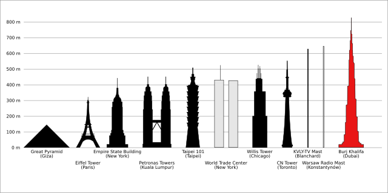

Explore the Most Popular Destinations
Traveling to prominent destinations throughout the world is more than just sightseeing; it's about immersing yourself in history, culture, and stunning architecture. Each site has a distinctive narrative to tell, whether it's the engineering marvel of the Eiffel Tower, the historical mysteries of the Great Pyramid of Giza, or the soaring heights of the Burj Khalifa. Every year, millions of tourists visit these destinations, drawn in by their rich history and spectacular architechture. Exploring these historic landmarks helps visitors to interact with diverse cultures, admire architecutural developments, and see how history has affected modern civilization. Whether you're standing atop the CN Tower in Toronto or viewing the Mount Fuji landscape in Japan, these experiences leave lasting memories that encourage a deeper respect for the world around us. Explore the world's most renowned destinations, not just the ones mentioned; also find some hidden gems! The table below provides examples of various "big name" tourist attractions.
| Location | Attraction |
|---|---|
| Paris, France | Eiffel Tower |
| Tokyo, Japan | Mount Fuji |
| Toronto, Canada | CN Tower |
| Cairo, Egypt | Great Pyramid of Giza |
| Dubai, United Arab Emirates | Burj Khalifa |
| Chicago, United States | Willis Tower |
| New York City, United States | Empire State Building |
Click on the image below!
